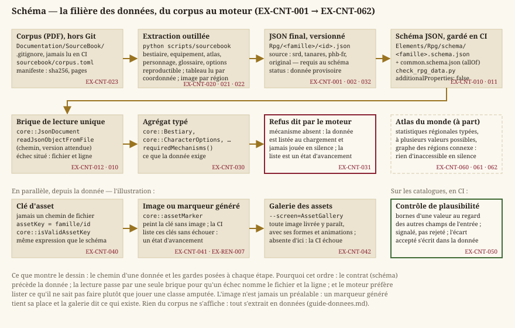
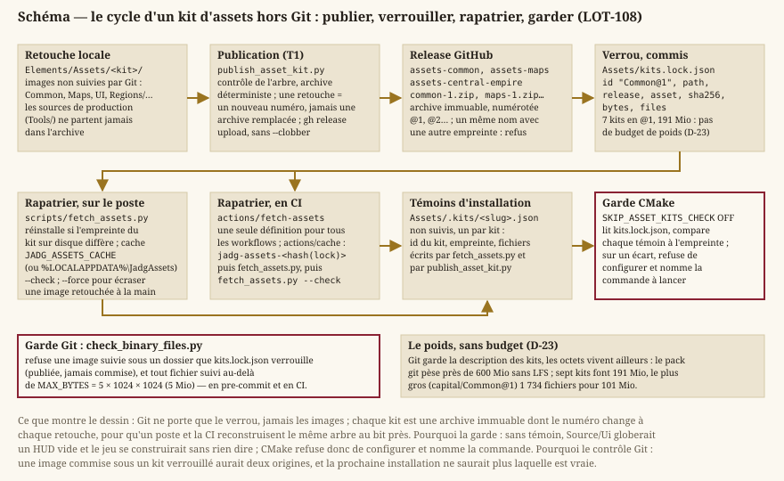

Contenu et données
Statut : socle livré, contenu à peupler. La chaîne d'extraction du corpus (
LOT-30), les schémas (LOT-32), le chargement des catalogues (LOT-79), le bestiaire de base (LOT-33), l'équipement (LOT-34) et les espèces et classes (LOT-36) sont livrés : le mécanisme est en place et testé. Ce qui reste est du contenu — les tables de progression complètes (LOT-304) et les sorts du Manuel (LOT-305). Dépend devision.md(le catalogue en JSON d'EX-VIS-007) et dearchitecture.md(frontièreCore/HMI).
Le jeu visé est un bac à sable dans un univers complet : treize régions, seize classes, treize espèces, cent-soixante-seize créatures. Aucune de ces valeurs ne peut vivre dans du C++ — ni en constante, ni en switch, ni en table codée en dur. Ce document porte les exigences de la filière données : d'où vient une donnée, ce qu'elle promet, et comment le moteur se comporte quand elle promet plus qu'il ne sait tenir.
Il ne dit pas ce que contiennent les catalogues — c'est l'objet de regles-d20.md, rpg.md, combat.md et inventaire.md. Il dit comment ils sont produits, validés et honorés.
1. Provenance
Le projet est privé et sans diffusion : les licences du corpus ne contraignent pas l'usage. Mais elles ne sont pas supprimées, elles sont endormies — elles se réveillent le jour d'une publication. La discipline qui garde cette porte ouverte tient en un champ.
- EX-CNT-001 — Toute donnée produite doit porter un champ
sourceparmisrd,tanares,phb-fretoriginal. Le jour où la question « qu'est-ce qui devrait sauter en cas de publication ? » se pose, elle se répond par une requête et non par une relecture de tout le catalogue. Le coût est d'une ligne par fichier, payée d'avance ; la relecture, elle, se paierait sur des milliers d'entrées et se tromperait.
- EX-CNT-002 — Le champ
sourceest obligatoire au schéma, pas recommandé par convention : une donnée qui ne le porte pas fait échouer la validation. Une discipline facultative n'est pas tenue sur cinq mille fichiers.
2. Contrats avant données
Le chemin d'une donnée, du livre au moteur, tient en un dessin. Chaque étape y porte l'exigence qui la garde, et l'on voit où une donnée peut mentir — et où le moteur est tenu de le dire.
{kind=link}

- EX-CNT-010 — Chaque famille de données (créature, objet, arme, armure, sort, espèce, classe, historique, état, type de dégâts) doit être décrite par un JSON Schema, et toute donnée livrée doit être validée en intégration continue. Un échec doit nommer le fichier et la ligne fautifs : un message qui dit seulement « donnée invalide » sur un catalogue de mille entrées ne sert à rien.
- EX-CNT-011 — Les énumérations partagées entre le C++ et les schémas (types de dégâts, conditions, écoles de magie…) doivent être vérifiées identiques par un test. C'est le point exact où une donnée et un moteur divergent en silence : le JSON déclare
psychique, le C++ ne connaît quePsychic, la valeur tombe dans le cas par défaut, et le sort cesse de faire des dégâts sans que rien ne l'annonce. Ajouter une valeur d'un seul côté doit faire échouer la compilation ou un test, jamais produire un jeu silencieusement faux.
- EX-CNT-012 — Le chargement d'un catalogue doit passer par une brique de lecture unique — ouverture, parsage, validation par schéma, report d'erreur situé, conversion vers un agrégat typé. Aucun catalogue ne porte sa propre routine de lecture ni sa propre validation écrite à la main. Le dépôt en comptait six variantes avant que la filière n'existe ; en ajouter une par catalogue serait multiplier par vingt un défaut déjà identifié.
3. Extraction du corpus
Les données proviennent de PDF, par une chaîne d'extraction outillée. Cette chaîne n'est pas un script jetable : elle est rejouée à chaque correction du corpus.
- EX-CNT-020 — L'extraction doit être reproductible : deux exécutions successives sur le même document produisent des sorties identiques. Chaque document source est enregistré dans un manifeste avec son empreinte SHA-256, son nombre de pages et son décalage de pagination. Une empreinte qui ne correspond plus doit faire échouer l'extraction, et non produire des données silencieusement décalées : les livres du corpus sont paginés en double page, et une correspondance fausse cible systématiquement le mauvais chapitre.
- EX-CNT-021 — Un tableau ne doit jamais être extrait par un mode de rendu en flux de texte (
-layoutou équivalent), mais par regroupement des mots selon leur coordonnée. Le mode en flux mélange les colonnes : sur la table des armes, il attribue le poids et le prix à l'arme de la ligne suivante. La donnée est alors fausse, et fausse silencieusement — ce qui est pire qu'une extraction qui échoue.
- EX-CNT-022 — Une image doit être obtenue par rendu d'une région de page, jamais par extraction de l'objet image brut : sur ce corpus, le flux brut produit des zones de bruit vert et cyan, quand le rendu passe par la composition complète et donne un résultat exact. Corollaire assumé : le rendu embarque tout ce qui est dessiné dans la région, texte compris, ce qui rend l'extraction d'illustrations semi-automatique — l'outil propose, l'humain recadre.
- EX-CNT-023 — Le corpus source et le texte intermédiaire produit par l'extraction ne sont pas versionnés ; les données finales le sont. Le corpus pèse des centaines de mégaoctets de binaires que le gestionnaire de versions compresse mal et que chaque clone traînerait. L'intermédiaire, lui, se régénère à la demande — le versionner reviendrait à versionner un cache. Les images des kits d'assets suivent la même logique depuis le
LOT-108: versionnées par leur verrou, pas par leurs octets (EX-CNT-070).
4. Ce qu'une donnée promet
C'est le cœur de ce document. Le catalogue sera complet longtemps avant le moteur : importer une classe prend une après-midi, faire que le moteur la joue correctement est un programme entier. L'écart doit être déclaré et consultable, jamais découvert en jeu.
- EX-CNT-030 — Toute donnée doit déclarer les mécanismes qu'elle exige (emplacements de sorts, ressource propre, liste de sorts dédiée, choix de sous-classe à un niveau donné, substitution de profil…). Une donnée qui ne déclare rien promet de ne rien exiger, et le moteur peut la servir en confiance.
- EX-CNT-031 — Le moteur doit refuser en le disant ce qu'il ne sait pas honorer : toute donnée exigeant un mécanisme absent est listée au chargement et n'est jamais jouée en silence. Une classe dont la ressource propre n'existe pas dans le moteur ne doit pas se présenter comme une classe ordinaire amputée de ce qui la définit — c'est ainsi qu'on livre un jeu qui ment sur ce qu'il sait faire. La liste des mécanismes manquants est un état d'avancement consultable, pas une erreur fatale.
- EX-CNT-032 — Une donnée provisoire doit porter un champ de statut le déclarant, l'intégration continue doit énumérer ce qui le porte, et son critère de retrait doit être écrit d'avance. Une donnée provisoire non marquée devient permanente par accident : c'est la façon la plus banale dont un échafaudage finit en mur porteur.
5. Assets
- EX-CNT-040 — Une donnée doit désigner son illustration par une clé d'asset, jamais par un chemin de fichier. Un chemin dans une donnée de règle lie le catalogue à l'arborescence du disque : tout déplacement de dossier casse alors des créatures.
- EX-CNT-041 — Toute clé d'asset sans image doit obtenir un marqueur généré, de sorte que le jeu tourne complet avant qu'aucune illustration ne soit produite. L'intégration continue liste les clés encore servies par un marqueur sans échouer : c'est un état d'avancement, pas un défaut. La production graphique devient un remplacement progressif, jamais un préalable bloquant.
- EX-CNT-042 — Tout asset graphique livré doit paraître dans la galerie des assets, l'écran de débug
--screen=AssetGallery: un modèle ajouté y montre toutes ses formes et toutes ses animations, disposées dans leur emprise, sans rien câbler d'autre que ses fichiers et son manifeste. Une famille d'assets nouvelle, que la galerie ne sait pas encore lire, s'y ajoute dans le même changement que ses premiers fichiers. Seules les images qui ne sont pas des assets à montrer en sont exclues, par une règle nommée dans le code (planches sources des ateliers, atlas procédural, interface, polices) ; l'intégration continue échoue sur toute autre image absente de la galerie. Vérifier un asset dans une scène de jeu (le Colisée) ne montre que ce que la scène utilise, dans la pose où elle l'utilise : à mesure que les ateliers produisent, c'est la galerie qui dit ce qui existe.
6. Contrôle de plausibilité
La validation par schéma dit qu'un fichier est bien formé. Elle ne dit rien de sa plausibilité : un loup à classe d'armure 47, une épée à trois pièces d'or au lieu de trente, une créature de facteur ⅛ avec quatre-vingt-dix points de vie franchissent un schéma sans broncher.
- EX-CNT-050 — Les catalogues doivent être soumis à un contrôle statistique de plausibilité : bornes attendues d'une valeur au regard des autres champs de la même entrée. Ce qui sort des bornes est signalé, pas rejeté — une créature volontairement hors norme existe, une extraction ratée aussi, et seul un humain les distingue. Une anomalie acceptée est enregistrée dans la donnée pour ne pas être re-signalée à chaque exécution : un avertissement qu'on réapprend à ignorer ne protège plus de rien.
7. Les kits d'assets, hors Git
Mille cinq cents pièces HD pour un seul quartier (LOT-108) : à ce rythme, les images pèseraient plus que tout le reste du dépôt réuni, et chaque clone les traînerait dans son historique pour toujours. Git garde donc la description des kits, et les octets vivent ailleurs.
{kind=link}

- EX-CNT-070 — Les images des kits (
Common/,Regions/,Maps/,UI/) ne sont pas suivies par Git : un kit se publie en archive immuable et numérotée sur une release du dépôt (scripts/release/publish_asset_kit.py), et Git ne garde que les manifestes et le verrouSource/Elements/Assets/kits.lock.json— nom, version, empreinte. Le poste et le runner rapatrient les kits du verrou (scripts/fetch_assets.py, appelé parbuild.ps1etsetup_dev.ps1), la configuration refuse de construire sans eux, et le contrôle des fichiers binaires refuse une image suivie sous un kit verrouillé. Une retouche ne se commite jamais : elle se publie, et le verrou change. Sans le verrou, deux postes construiraient deux jeux différents à partir du même commit ; sans la garde, le premier se lancerait sur des cartes sans texture sans rien dire. - EX-CNT-071 — Un kit n'a pas de budget de poids (décision D-23) : une zone se produit aussi riche que le lieu le demande, et le contrôle des assets HD pèse chaque kit et publie son poids dans le résumé du job, pour mémoire. Le plafond de 5 Mio par fichier demeure — une image au-delà est un défaut de production, pas une richesse.
- EX-CNT-072 — Toute pièce HD livrée passe le contrôle des assets HD (
scripts/checks/check_hd_assets.py) : PNG RGBA 8 bits, 4096 px de côté au plus, une dalle de sol exactement à l'échelle que le manifeste déclare, et aucune image que le manifeste ne cite ni aucune pièce citée sans image. Une pièce s'installe par un descripteur et une commande (scripts/assetsGeneration/install_hd_asset.py), jamais à la main : c'est la seule façon de ranger quinze cents fichiers au bon dossier de l'arborescence des lieux (EX-LVL-029) sans en perdre un.
8. Atlas du monde
Les catalogues précédents décrivent des choses — une créature, une arme, un don. L'atlas décrit un espace, et un espace a une propriété qu'aucune liste n'a : on peut s'y perdre, ou plutôt, un morceau peut devenir inaccessible sans que rien ne le dise.
- EX-CNT-060 — Les statistiques régionales doivent être typées : une note prise dans une énumération fermée et ordonnée, jamais du texte libre. Ce sont des paramètres de jeu — présence de monstres, accès à la magie, prospérité — et un moteur qui doit comparer
« Very High »à« High »par une comparaison de chaînes le fera dans l'ordre alphabétique, où High précède Very High mais aussi Low.
- EX-CNT-061 — Une statistique régionale doit pouvoir porter plusieurs appréciations avec leur portée. La source distingue le nord du sud, la surface du souterrain ; aplatir ces cas sur une valeur unique invente une donnée, et les laisser en texte libre viole l'
EX-CNT-060. Une région uniforme n'en porte qu'une, sans portée — le cas courant reste simple.
- EX-CNT-062 — Le graphe des régions doit être connexe et son voisinage symétrique, et les deux doivent être vérifiés en intégration continue sur la donnée livrée, pas seulement par l'outil qui l'a produite. Une région injoignable est du contenu que personne ne verra jamais : le jeu se lance, la région existe, elle est simplement au bout d'aucun trajet — il n'y a aucun symptôme à observer.